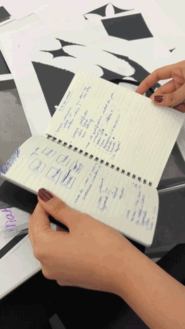

i have a notebook where i write my to-do-lists.

i personally prefer to go by task, and i don't feel the need to have a calendar as i remember when i make plans with people.
when it comes to to-do-lists, i like the feeling of striking something off - it's satisfying.
i feel like a planner might be more useful than just a notebook but it feels too overwhelming and i remember most of the things in my head already. planners are intimidating when it's by-the-date, i prefer to finish by priority.
i don't use digital ones because i just like writing. i also feel that my laptop is being used so much in my daily life that i need some hand writing.
a small notebook with a small list helps me to remember more easily. assignments are written first while groceries and miscellaneous tasks are written right after - i separate it based on immediate priority and need. it can also be an everything book for doodles, writing, notes, etc.